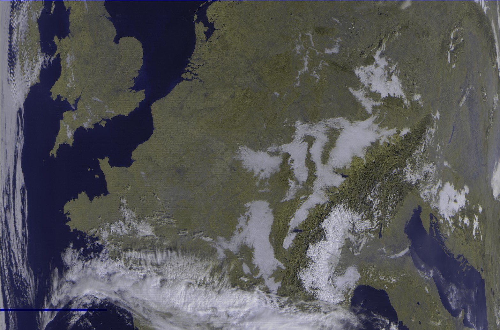

Pinned projects
CARLA Dataset Generator

This project aims to help to generate dataset with the CARLA simulator. I used it in my Ph.D. project to build cooperative dataset featuring vehicles and road side (infrastructure) ooint of view.
Cooperative Semantic Mapping
Core of the work ofd my Ph.D. work, this project generates a semantic grid map from multiple points of view, either from vehicles or from road side infrastructure. Several approaches are considered for the fusion. One is based on a probabilistic approache while the other one is based on Dempster Shafer Theory.
Meteor Decoding Pipeline
This side project is a GNU Radio companion receiving and processing pipeline to decode the Russian weather satellite METEOR-M2. A set of software to use is also proposed for a full image processing on MacOS.